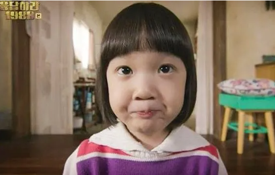

Sun-young is a widow who left her husband first and was set in the drama, where she was 42 years old and from Gyeongsang Province. Her personality is bright and lively. However, her biggest drawback is that she cannot cook. Still, she lives happily, thanks to her kind first son, Sun-woo, who always eats her food deliciously, and Jinju, the cute youngest of latecomers.
Sunwoo
Set in the drama, 18-year-old Sunwoo is a principal and class president, the son of Sunyoung, who is athletic, a good dancer, and kind to everyone. He is the most mature among his friends in the neighborhood. He also shares his daily life with his mother and loves his sister very much.

Jinju
Jinju is Sun-young's cute daughter, who the neighborhood always love against the backdrop of dramas at the age of six. She likes to ride a horse on someone's back and is greedy about eating. She always seems to enjoy something in dramas.